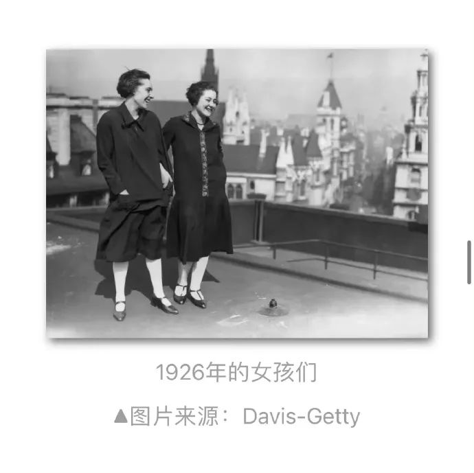

热点2022年9月|女装口袋？高铁卫生巾？女性也需要日常生活中的舒适、实用和便利

编辑：杜舒懿
数据来源：闪闪
0
1#女裤口袋平均比男裤口袋短48%#
作家Lucy Rycroft-Smith曾试着一个月只穿男装，她发现的第一件事就是口袋的差异。“我得说说口袋。我现在穿的男装，口袋巨多，每一面都有，而且都超大超能装。我今天穿的这件就有9个口袋，我数过了！想想我穿女装的日子，一个口袋也没有。”
我还常听说一个逻辑谬误：“女人有包，要啥口袋”。简直又是无意间把女人当作要区别对待的弱势群体。
我记得以前带手提包的时候，不得不蹲在那疯狂找名片，而我的男同事已经潇洒地从胸前口袋里掏出来了。
布丁网的研究者们搜集了美国最畅销的20个牛仔裤品牌，测量了它们的男女裤装的口袋大小。
男裤与女裤前口袋的平均大小对比。该测量数据证实了每个女人都知道的事：女裤口袋是来搞笑的。
平均而言，女裤口袋比男裤口袋短48%，窄6.5%。
除开这些表面的测量数据，我们还想知道这些口袋的功能表现如何。毕竟，要看口袋有多好，得看它有多能装。女裤的口袋中，只有40%能放得下市面上常见的智能手机。不到一半的女裤口袋能装得下小钱包，这里说的还是那种为裤子前口袋特意定制的小钱包。这还没完，大部分的女裤前口袋，你甚至连手都放不进去。
（来源：中国日报双语版）
#女装口袋# 「很多女装都没有实用的口袋」，这个问题不是第一次被提及
早在19世纪晚期，在英国成立的理性服装协会（Rational Dress Society），就发起了「男女口袋平权」运动，致力于让女性和男性一样穿上舒适且实用的衣物。
但实际上，直到20世纪70年代，这个运动才初见成效：长裤，尤其是牛仔裤，逐渐成为女性的选择。
但「口袋」的平等，迟迟没有到来。
这其实很不可思议。毕竟在几个世纪以前，所有的衣服都是不含口袋的，男人和女人会把ta们的东西装在小袋子里，绑在腰上或者藏在裙子底下。
随着工业革命席卷全球，人们需要携带更多的东西，男女的口袋出现了不同的演变。
男装为了更实用、隐蔽，选择将口袋缝制在服装内侧，但女装为了修身、美观，将口袋缝在衣服外。
看似简单的内外差别，导致女装口袋的容量不止是小了，甚至已经没有实用价值，仅仅作为一种装饰而存在。
而据说，Christian Dior曾直言道：「Men have pockets to keep things in, women for decoration.」（男人的口袋用来装东西，女人的则用来作装饰品。）
口袋差异背后，隐藏着社会和大众对男女性别的不同期望，这是由当下男女的社会地位和分工来决定的。
这种期望，在服装届延续至今。
服饰作为视觉语言中很重要的一部分，当我们还处于幼儿时期，就通过颜色、花纹、装饰、类别等方面，显示出了「男孩」和「女孩」的差异。
几乎所有女孩的东西，都含有「装饰性」的设计，即使是迷彩这样的单一元素，运用到女装上面，也会变成粉色迷彩。
而男孩的东西，则强调「功能性」设计，即使这种功能性本身也纯属装饰，毕竟现代生活实在不需要男人一条裤子上有六个口袋。
想必对于男女来说，二者都并非一种理想状态。
当「功能性口袋」因为不符合传统的女性气质想象，而不被女装设计纳入考虑范畴时，那些出门不想背包，需要随身装一些小东西的女孩们的需求是被无视的。
甚至可能是被有意无视的，为了将女生引入了另一项消费选择——买包。
可那些不想买包的人要怎么办？女性服饰难道不应该为不愿买包的女孩们，提供更多的选择余地吗？
当「功能性口袋」必须镶嵌在男生的服装上，那势必也剥夺了想要其他装饰的男生的权利。
正如格雷森·佩里在《男性的衰落》中所说的那样：男人和女人一样，喜欢无用的东西，不过男人会用虚假的功能包装，掩饰那些东西。
对男生而言，这样的「功能性」，何尝不是一种束缚？
「很多女装都没有实用的口袋」，这个问题不是第一次被提及，但直到今天，我们仍然在呼吁。
女生们需要更实用的口袋，而且这不仅仅是女生自己的事情：每一处不公等的现象背后，都绝非只有一个人、一类人、一种性别受到损害。
也如南希·史密斯的诗歌所言：「只要有一个女人/向自身的解放迈进一步，定有一个男人/发现自己也更接近自由之路。」
所以朋友们，就从口袋开始吧，让我们摆脱「实用」和「美观」的束缚！
（来源：莓问题呀 作者：野人 校对：雨山）

为什么女性更瘦却更希望减肥
我们不反对女人对自我形象的关注。但我们崇尚自然之美、健康之美、人性之美以及自由之美。如果把商业文化和传统文化合谋后刻意给定的女性美的标准作为自己极端的生活方式和人生价值去追求，那么，女性在获得涂脂抹粉和改变身体的自由后，就有可能失去人格的独立和尊严，更深的沦为男性的附庸和玩物。
因为自古女性身体美就不是单纯的个体行为，而是一种内涵丰富的文化，铭刻着男性中心文化的深刻烙印。而在这种文化底下，女性美的历史充满着性别歧视和压迫的斑斑泪痕。
英国一位学者蔼理斯说：“什么时候女性才开始打扮呢？是女性失去了地位、需要哀求男人和让男人看自己时。因此，两性中谁去打扮，关键在于两性的社会地位，即谁处在下风”。（荣维毅，2001）
回溯我国传统女性身体美审美标准产生的历史及其演变过程，就会理解这句话的意蕴之深。
在原始时代，男女两性是一种平等的“伙伴关系”，女性的生育之美、创造之美和奉献之美成为人们讴歌的对象。随着阶级社会的产生和父权制的确立，妇女地位发生了根本性的转变，女性被剥夺了审美主体地位，被异化为男性的审美客体。权力和经济地位决定了男性主宰女性美的程度，因此，“千红一哭”、“万艳同悲”成了古代女性美被蹂躏的真实写照。正如一位学者所言“一部女性美的历史，实质上不过是我国历代男性统治者，尤其是最高统治者遴选、霸占、掠夺、玩弄、践踏女性美的历史，是中华美女的血泪史”。（刘巨才，1998）
女性审美主体地位的丧失，也是对女性道德美和形体美双重标准演化的结果。“礼教”妇德是男性中心社会权力和财产传承系统为控制、统治女性而制定的，它造就了一代代逆来顺受、委屈求全而又弱不禁风的女性形象，使女性精神与体质都在向“弱化”的方向发展。由于它过于强调“男女有别”，人为的使性别差异扩大化，制造了许多“男尊女卑”、“男强女弱”、“男刚女柔”、“男外女内”、“男主女从”等一系列男女有别的性别二元对立，并不断强化女人的价值就是让男人满意和愉悦等传统观念，至今仍影响着两性关系的和谐与协调。
正如尼采所言：“男性为自己创造了女性的形象，而女性则模仿这个形象创造了自己”。女性在失去了审美的主体地位后，便按照男性权势者的审美标准，把审美情趣集中到自我包装、自我美化上来。因此，在深宫豪宅以至草野民间，都演绎了一幕幕历史悲剧。“楚王好细腰”，而 “宫人多饿死”；男人喜欢“纤纤玉笋裹春云”，女性则不惜代价，进行自残式的缠足。“女为悦己者容”，正是女性接受和认同被弱化和被客体化、被物化现实的一种体现。
男性统治者不仅制造了一系列的女性美标准让女性去遵从，以供自己把玩，而且还把女性美作为战利品、作为商品或动物在权贵者中进行交换、馈赠和出卖，这种情况在民间也是如此。比如，明末清初文学家张岱在《陶庵梦忆》中对扬州“瘦马”（一些美貌的女孩子）交易过程的记载，这种买卖与市场上的牲口交易没有两样。不把妇女当人看，而只是当作男性的附属和玩物，这是病态的女性审美文化的本质所在。
我们希望男女两性共同努力，从病态的审美文化中突围，共同塑造健康美丽的新女性形象。我所说的美丽不仅是容貌和身材，而是一个健康的、散发着生命活力和创造力的身体，一个能愉悦的接受和理解自己和他人身体的良好心态，而这种心态的获得，有赖于一个能容纳人们多元的生存状态和不同体貌类型的社会审美文化环境的存在。只要是一个身体健康、心智健全、并愉悦于自己所处的环境的人，都是美丽的。
（文：姜秀花 健康的就是美丽的——对减肥整容等女性身体再造行为的文化评析
图：黄盈盈 21世纪中国女性“盲从减肥”的社会文化原因）
卖淫嫖娼过程中的你情我愿只是表象，性剥削甚至压迫才是本质。
所谓性自由，不过是将女性当作商品对待的假自由，实际上是对女性的真剥削。古今中外的历史和现实早就证明，嫖娼就是一种极端物化女性的方式。
根据联合国2017年发布的《人口贩卖特别小组报告》，在被调查的1.3万名女性中，有超过80%的人都是在违背自己意愿的情况下，被迫从事性服务。
性交易一直是各种违法犯罪的源头，女性性工作者在所有职业中危险度最高。
国外合法性交易也并非主流，西班牙正计划取缔卖淫，法国、瑞典等多国也相继通过立法来打击色情业，美国也仅剩内华达州允许性交易。
嫖娼合法化将严重影响传染病防控，从2007年起，性传播开始取代注射毒品，成为了我国艾滋病传播和流行的最主要途径。
据中国疾病预防控制中心发布的2020年预防艾滋病最核心信息显示，我国新诊断报告艾滋病感染者中，95%以上通过性途径感染，其中异性传播约占70%。
卖淫嫖娼既涉及非固定性伴侣，又属于有偿性行为，一旦被合法化，相关疾病的控制难度将会大大增加。
（作者：李拽拽）
#微信坚决抵制无底线追星#
李大钊在1919年4月的《废娼问题》中提出了废除娼妓的理由。
月经是伴随女性一生的基础健康议题，卫生巾的使用是一半人口的必然需求，为了女性生来的权利，我们将不会停下脚步，进步的呼声永远不会被无知的反对所打败！我们一起呵护妹妹们的健康成长，为妹妹们的披荆斩棘之路护航吧！支持#月经安心行动#，让每个妹妹都用上卫生巾 。女性就是能量无穷！
男权思维就是我们男性不用的，凭什么要给女性便利呢？
在这些男权分子眼里女性不是和他们一样同等的人，而是要低一等，不配享有便利。
所以在他们看来，高铁上可以供应100多种休闲零食、设置医药箱、充电器、针线包、安全设施…但只给女性用的卫生巾就是不行呢？
8月26日，民政部公布《2021年民政事业发展统计公报》。数据显示，从2013年到2021年，我国结婚率持续下降，且平均初婚年龄向后推迟。
据《公报》显示，全年依法办理结婚登记764.3万对，比上年下降6.1%；结婚率为5.4‰，比上年下降0.4个千分点，创历史新低。
从2021年结婚登记人口年龄分布情况来看，25-29岁年龄段人数最多，为539.3万人；30-34岁年龄段人数其次，有305.2万人；40岁以上年龄段人数为297.9万人，20-24岁年龄段人数有252.9万人，35-39岁年龄段人数有133.2万人。总体来看，30岁以上结婚人群占比近半。
2021年，我国新生儿数量由2020年的1200万下降至1062万。
国家卫健委表示，由于出生率连年下降，我国人口在2025年将面临负增长的情况。
陆杰华教授在接受《健康时报》采访时表示，“随着社会经济的发展，人们受教育水平提高，年轻人尤其是90后的婚恋观也发生了巨大的变化，年轻人不愿意太早进入婚姻，结婚也并非是人生的必选项。”
离婚冷静期（the "cooling off" period before divorce）的存在也导致人们对于结婚的态度越来越谨慎。
郭教授补充道："传统观念认为，婚姻和家庭的意义在于，通过这项制度来维护社会稳定。但现在越来越多的人持相反态度。在很多人看来，结婚充满着风险。”
09
9月16日，广东深圳，据深圳公安南山分局一份行政处罚书显示：一名35岁的腾讯员工吕某某在南山书城地铁口乘坐往上行的扶手电梯时，摸了前面一名女性臀部两下，以摸臀部的方式对该名女性进行猥亵，据被侵害人的陈述、证人证言、辨认笔录、电子数据等证据证实，根据相关规定，决定给予吕某某行政拘留14日的行政处罚。
从接近腾讯方面人士处了解：针对网传信息，腾讯第一时间成立了调查组。经调查，该涉事员工行为严重违反公司规定，已启动解聘流程，并将实名通报，永不录用。
资讯｜【伊朗】一名女子在“道德警察”羁押下死亡，伊朗爆发暴力事件
安全部队镇压了伊朗各地的抗议示威者，人们抗议一名年轻女子在所谓的道德警察羁押下死亡，据称这次镇压造成5人死亡。
本月，来自伊朗西部的22岁库尔德妇女马赫萨·阿米尼（Mahsa Amini）在首都死亡，这一事件激起了人们对于政府越发严格的女性极端保守着装规定的愤怒。
据官方媒体报道，阿米尼在离开地铁站时被拘留，她在被拘留期间心脏病发作，陷入昏迷。其家人坚称她此前没有健康问题，活动人士表示她可能被警察殴打过。
星期一是伊朗全国动乱的第三天，包括首都德黑兰在内的许多地方都有抗议活动。据人权监督机构的亨戈（Hengaw）称，安全部队在库德族城市萨凯兹（Saqez）向抗议者开枪，造成两人死亡，另有两人在迪万达雷（Divandarreh）镇丧生，一人在德赫戈兰（Dehgolan）丧生。
伊朗尚未证实在抗议活动中有人员死亡。半官方性质的法尔斯通讯社报道称，安全部队驱散了一些城市的示威者，警方逮捕了一些抗议活动的领导人。
据伦敦新闻频道伊朗国际（Iran International）报道，阿米尼死后，高级道德警察官员艾哈迈德·米尔扎伊（Ahmed Mirzaei）上校被停职。据《卫报》报道，官方否认了这些说法。内政部此前在极端保守派伊朗总统易卜拉欣·赖斯的授意下，下令对阿米尼之死进行调查。
大德黑兰地区的警察指挥官告诉记者，阿米尼所佩戴的头巾不太合适，但她没有反抗拘留，甚至在警车里开玩笑。自1979年伊朗革命以来，妇女就必须戴头巾并穿着其它保守的服装。
今年夏天，政府的镇压引发了伊朗妇女的抗议运动，她们拍下自己不戴头巾的照片，并发布在社交媒体上。
(来源：The Washington Post；翻译：塔塔)